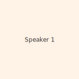
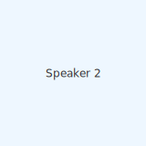
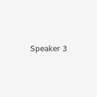

Early TechCon: community-driven talks and workshops.
Founded in 2016, TechCon began as a small community meetup and has since grown into a multi-day conference bringing together researchers, engineers, and product leaders from around the world. Over the years the event expanded its tracks from web and cloud to AI, security, and developer experience.
Mission
Our mission is innovation with inclusion.
TechCon’s mission is to accelerate knowledge sharing and collaboration across the tech community. We prioritize accessibility, practical workshops, and inclusive conversations that help attendees build useful skills and expand their networks.
Past Speakers

Dr. Ada Innovator — Keynote, 2022
Dr. Ada Innovator
Dr. Innovator is a leader in applied AI research; her keynote covered ethical deployment of machine learning at scale and inspired the 2023 Responsible AI track.

Mr. Lin Coder — Workshop lead, 2021
Mr. Lin Coder
Lin is an open-source maintainer and developer experience engineer who ran hands-on workshops on building resilient developer tools.

Ms. Sara Cloud — Panelist, 2019
Ms. Sara Cloud
Sara is a cloud architect whose talks on cloud-native security helped shape TechCon's cloud security track.